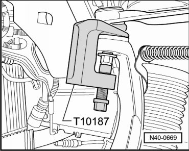
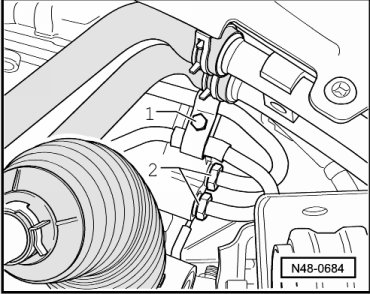
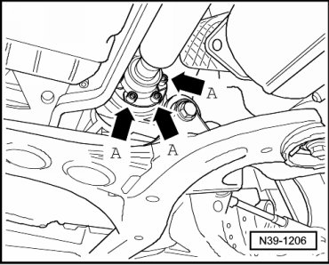
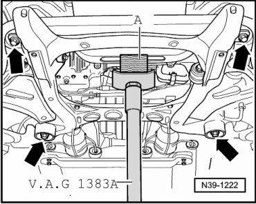
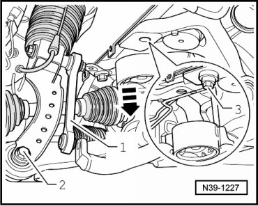
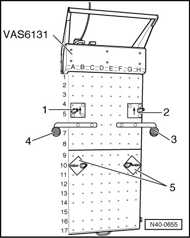
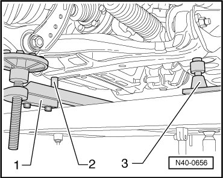
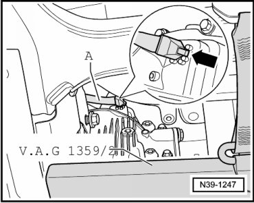
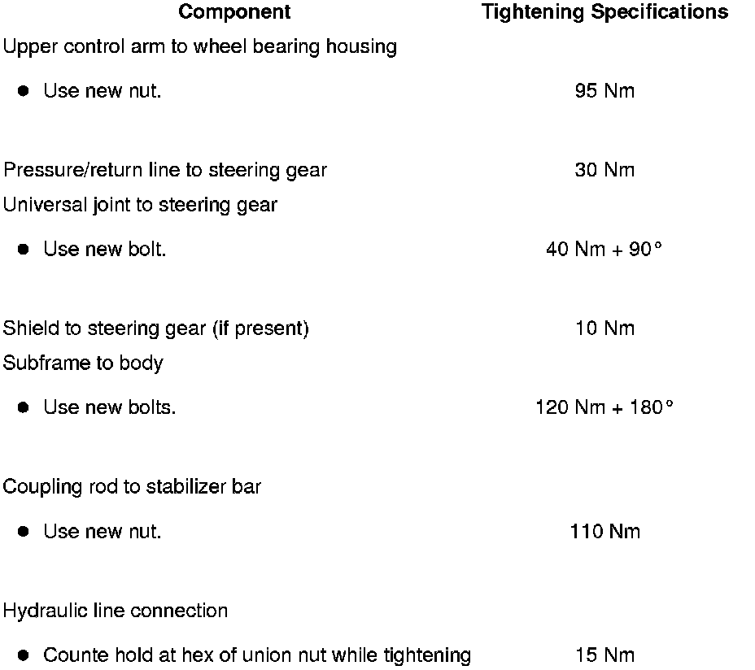

Subframe
Subframe
Special tools, testers and auxiliary items required
• Tensioner hooks (VW 552)
• Torque wrench (VAG 1331)
• Torque wrench (VAG 1332)
• Engine and transmission jack (VAG 1383 A)
• Socket, nominal size 14 mm (T10099/1)
• Spindle (10 - 222 A /11) (quantity: 2)
• Hose clamp (3094)
• Scissor lift table (VAS 6131)
• Left support (VAS 6131/6-1)
• Right support (VAS 6131/6-2)
• Left axle support (VAS 6131/6-3)
• Right axle support (VAS 6131/6-4)
• Support (2x) (VAS 6131/6-5)
• Ball joint puller (T10187)
Removing
Brief Description
Subframe is removed using scissor lift table. Front mounting points of engine carrier must be secured using shorter bolts. Subframe is removed together with the following: Steering gear, front axle drive, lower control arm and wheel bearing housing. Air spring shock absorbers/struts with mounting brackets and upper control arms remain on vehicle.
CAUTION!
Before starting work, stabilizer bars must be coupled in vehicles with separable stabilizer bars. Otherwise, there is the danger of injury caused by unintentional separation.
- Depressurize hydraulic system for separable stabilizer bars using.
- Loosen wheel bolts.
- Raise vehicle.
- Remove front wheels.
- Hook in tensioner hooks (VW 552) on both vehicle sides in upper opening of wheel housing - arrow A - and in upper control arm - arrow B -.

- Lightly pre-tension control arm to prevent damage to ball stud caused by ball joint.
- Press out upper control arm ball stud.

- Disconnect brake hoses from brake lines in wheel housing.
- Disconnect all electrical wires from body to axle.
- Remove noise insulation below engine/transmission.
- Remove bolt - 1 - and bracket for hydraulic lines.

- Remove pressure and return lines - 2 - from steering gear.
- Remove driveshaft bolts - arrows A - from rear final drive and tie up.

- If present, remove shield - A - from steering gear (2 bolts).

- Remove bolt - B - for steering column universal joint at steering gear and remove universal joint from steering gear.
With Separable Stabilizer Bar
- Disconnect both hydraulic lines - 1 - and electrical connection - 2 -.

Lines and wires must not be mixed up when connecting!
- Check whether color marking is present on front in driving direction. If no longer present, apply a new one.
- When loosening hydraulic lines, counter hold using open end wrench.
Continuation for All
- Hook spindles (10-222 A/11) in eyelets - arrow - of engine carrier on left and right vehicle sides.

- Place one wood block - A - of approximately 300 mm in length in each bracket of spindles (10-222 A/11).

Brackets must point backward, while doing this.
- Tighten wing nuts of spindles, wood blocks must be supported at subframe - B -.
- Install insert of floor jack in engine and transmission jack (VAG 1383 A).
- Place engine and transmission jack (VAG 1383 A) and a block of wood - A - under engine carrier and press lightly against.

- Subframe, locating. Refer to --> [ Subframe, Securing ] Subframe, Securing.
- Remove bolts - 1 and 2 - for subframe.

- Remove coupling rods - 1 - on left and right from stabilizer bar.

- Lower subframe approximately 50 mm using spindles (10-222 A/11).
- Install two M14 x 1.5 x 90 bolts, for example bolts (N 104 281 01) to secure engine carrier to body on left and right - 3 - sides.
- Remove engine and transmission jack (VAG 1383 A) from below engine carrier.
- Install support onto scissor lift table as shown in illustration.

1. Left support (VAS 6131/6-1)
2. Right support (VAS 6131/6-2)
3. Left axle support (VAS 6131/6-3)
4. Right axle support (VAS 6131/6-4)
5. Support (VAS 6131/6-5)
- Support subframe using scissor lift table.

1. Left axle support (VAS 6131/6-3)
2. Left support (VAS 6131/6-1)
3. Support (VAS 6131/6-5)
- Remove spindles (10-222 A/11) from subframe.
- Carefully disconnect ventilation line - A - from front final drive.

- Now, slowly lower subframe while constantly observing for freedom of movement.
Installing
Installation is the reverse of removal, with special attention to the following:
Always replace bolts for driveshaft.
- Install subframe using new bolts - arrows -.
- Remove spindles (10-222 A/11) from subframe.
- Install universal joint on steering gear and tighten bolt - B - to tightening specification.
- If present, install shield - A - on steering gear. Refer to --> [ Steering Gear Assembly Overview ] Steering Gear Assembly Overview.
- Install front wheels. Refer to --> [ Wheel Bolts, Tightening Specification ] .
With Separable Stabilizer Bar
- Bleed separable stabilizer bar. Refer to --> [ Separable Stabilizer Bar, Bleeding ] Procedures.
Continuation for All
- Bleed brake system.
- After installation, road test must be performed; if steering wheel is crooked, vehicle alignment must be performed. Refer to --> [ Wheel Alignment ] Wheel Alignment.
Tightening Specifications
